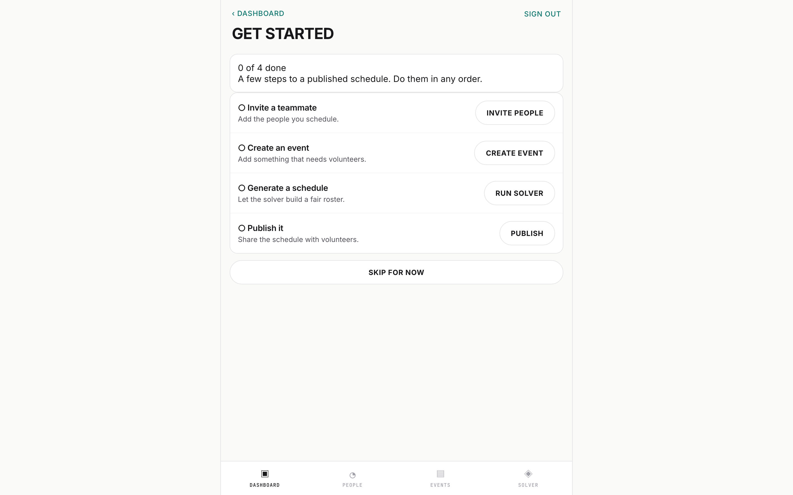

AI Product Studio（APS-3）的一部分 · 约 75 分钟 · 前置：第 1–3 模块
概览

- 进度：4 步完成 0 步，顺序不限
- 邀请你要排班的人
- 生成排班表：由求解器构建名单
- 把它发布给志愿者
SourceSignUpFlow/docs/screenshots/current/basketball/1440/onboarding.png
- 移动应用 → 路由Bearer JWT
- 路由 → 鉴权依赖项每个受保护路由上的 Depends()
- Web 应用 → 服务同一套服务
- 路由 → 服务
- 路由 → 求解器生成排班表
- CLI → 求解器init · solve，无需服务器
- 服务 → 数据库每条查询都带 org_id
- 服务 → Celery worker排队：.delay()
SourceSignUpFlow/api/main.py:187-245 · SignUpFlow/api/dependencies.py:46-138 · SignUpFlow/api/routers/solver.py:40 · SignUpFlow/api/cli/main.py:16-27 · SignUpFlow/api/database.py:15 · SignUpFlow/api/services/notification_service.py:72
第 1 模块给了你一套操作系统——项目宪章、智能体规则、模板，以及一个小循环。本模块在一个真实的 SaaS 上以生产规模运行这个循环。SignUpFlow 是一个多租户的志愿者排班产品（FastAPI + SQLAlchemy 2.0 + JWT），它的功能在技术上很普通——CRUD 加一个贪心启发式求解器。这个仓库真正展示的，是一套借助 AI 智能体进行构建的治理体系：specs/ 下有 17 个规格文件夹（spec folder），每一个都是完整、自成一体的指令集。这一原型的教训依然成立：智能体不会降低对流程的要求——反而会提高它。 当代码几分钟就能写出来时，瓶颈就转移到了规格、验证，以及对「究竟验证了什么」保持诚实。
范例是 specs/014-security-hardening/——一项安全工作，规格细化到 8 个用户故事、44 条功能需求，以及大约 4,700 行契约。本模块逐一走读这个文件夹中的每一个产物，然后教你用一个测试来评判规格质量——一个没有任何对话记忆的全新智能体会话，能否仅凭这些文件完成实现？——最后讲诚实的变更记录：一个故事一个 PR，带严重级别标注的本地评审，以及对照仓库本身验证生成的产物。
学完本模块，你能够：
- 逐一走读一个生产环境的规格文件夹，说出每个产物负责什么、由什么消费（
specs/014-security-hardening/）。 - 在你自己的一个功能上运行完整的工作流——specify → clarify → 检查清单关卡 → plan（研究、数据模型、契约）→ tasks → implement ⇄ converge——使用 spec-kit 1.0 的命令名，并把 SignUpFlow 的旧布局当作旧布局来读（
docs/SPEC_KIT_SETUP.md、.specify/templates/）。 - 用陌生人测试（stranger test）评判规格质量，并用检查清单关卡的通过规则来执行它（
checklists/requirements.md）。 - 诚实地记录变更：一个故事一个 PR，采用 Summary / Changed files / Validation / Follow-ups 格式；本地评审给出带严重级别和文件/行号的发现；对生成的产物做漂移（drift）检查（
AGENTS.md、docs/ai-pr-review.md）。
实验 M4 会把这些变成你自己的、针对一个真实功能的完整规格文件夹。
M4.1 — 完整的产物流水线（约 25 分钟）
目标
完整走读 specs/014-security-hardening/。对每个产物，说出它负责什么、由哪条命令生成、由哪个下游产物消费——这样你就能在实验 M4 中为自己的功能复现这一整套产物。
讲解
流水线及其命令。 Spec-kit 的 README 给出了当前的循环（github.com/github/spec-kit，v1.0.12，2026-09-26 阅读）："Constitution once per project; specify → plan → tasks → implement → converge per feature,"，然后是 "Repeat implement → converge until convergence reports Converged." 在 Claude Code 中，specify init --integration claude 把每一步安装为一个技能（skill）：/speckit-constitution、/speckit-specify、/speckit-plan、/speckit-tasks、/speckit-implement 和 /speckit-converge。三个可选的质量关卡保留原位：plan 之前的 /speckit-clarify、plan 之后的 /speckit-checklist，以及 tasks 之后的 /speckit-analyze。它们在工具里是可选的，在本模块里不是：实验 M4 仍然要求遵守澄清规则并通过检查清单关卡。其他智能体对同样的步骤拼写不同——spec-kit 的参考页写作 /speckit.specify，Codex 用的是 $speckit-specify——所以请使用你的智能体的 specify init 输出所列出的形式。根据仓库的 CHANGELOG.md：1.0.0 于 2026-08-21 发布；converge 在 0.11.2（2026-06-18）引入；Claude Code 在 0.4.5（2026-04-02）改用原生技能；0.10.0 移除了旧的 --ai 标志，改用 --integration。在 1.0.12 上，specify init --ai claude 会以 "No such option: --ai" 停止（2026-09-26 运行）。每条命令都消费上一条的输出——这就是全部机制：
specify ── clarify ── CHECKLIST ── plan ─────────────────────────────── tasks ── implement ⇄ converge
WHAT ≤3 Qs pass/fail HOW: research · data-model · Phase 2 until Converged
before plan contracts · Constitution CheckConverge：新的一步。 /speckit-converge 读取 spec.md、plan.md 和 tasks.md，"as the sole source of intent"（作为唯一的意图来源），并以项目宪章作为约束。它评估当前的代码，把每一项未完成的工作作为新任务，追加到 tasks.md 中 ## Phase N: Convergence 标题之下。它从不编辑规格、计划、已有任务或代码。当没有剩余工作时，它让 tasks.md 保持 "byte-for-byte unchanged"，并报告 "Converged"（github/spec-kit v1.0.12 中的 templates/commands/converge.md，2026-09-26 阅读）。那个文件中有一行，用工具自己的话道出了 M4.3 的教训："completion claims are not evidence"——一个已勾选的勾选框会被对照代码重新检查。它不能取代你的漂移检查：converge 仍然是一个智能体，在对照另一个智能体写的产物给工作打分。
SignUpFlow 早于 1.0——把它的文件夹当作旧布局来读。 这个仓库在 2025-10-20 引入 spec-kit（提交 2af939f；在你的克隆中运行 git log -- .claude/commands），此后没有重新初始化过。你即将打开的文件，与今天 specify init 生成的并不一致。与在 1.0.12 上全新运行的 specify init --integration claude（2026-09-26 运行）相比：
| SignUpFlow（1.0 之前） | Claude Code 中的 Spec-kit 1.0.12 | |
|---|---|---|
| 命令 | 8 个名为 speckit.<name>.md 的文件（SignUpFlow/.claude/commands/） | 10 个技能，.claude/skills/speckit-<name>/SKILL.md |
| 你输入的 | /speckit.specify | /speckit-specify |
| Converge | 没有；/speckit.analyze 只在产物之间相互比较，而不对照代码（SignUpFlow/.claude/commands/speckit.analyze.md:2） | /speckit-converge，反复运行直到 "Converged" |
| 其他新增 | — | /speckit-taskstoissues；.specify/init-options.json、integration.json、integrations/、workflows/ |
| 模板 | 多了 agent-file-template.md 和两个进度模板；没有宪章模板（SignUpFlow/.specify/templates/） | checklist、constitution、plan、spec、tasks |
| 文档中的顺序 | specify → clarify → plan → tasks → analyze → implement（SignUpFlow/docs/SPEC_KIT_SETUP.md:9-15） | Constitution 一次；specify → plan → tasks → implement → converge |
延续下来的，正是本模块评分所依据的一切：产物集合，以及下文引用的模板规则。"INDEPENDENTLY TESTABLE"、[NEEDS CLARIFICATION: …]、"GATE: Must pass before Phase 0 research"、"Fill ONLY if Constitution Check has violations" 和 "Include exact file paths in descriptions" 仍然都出现在 1.0.12 的模板中。本课引用 SignUpFlow 时，保留仓库带点号的拼写。你自己运行 spec-kit 时，请使用 1.0 的名称。
现在走读这个文件夹。下面的每一条主张都附带你可以打开的文件。
spec.md——做什么（WHAT），与技术无关（432 行）。 它开篇是 8 个有优先级的故事：限流（US1）、审计日志（US2）、CSRF（US3）、会话失效（US4）、2FA（US5）、安全头（US6）、输入校验（US7）、密码重置（US8）——六个 P1，两个 P2。每个故事都有一段通俗的用户旅程、一行 "Why this priority"、一个 "Independent Test"，以及 Given/When/Then 验收场景（acceptance scenario）。下面是 US1 的第一个场景，原文照录：
- Given a user attempts to log in, When they fail authentication 5 times within 5 minutes, Then further login attempts are blocked for 15 minutes
（specs/014-security-hardening/spec.md，US1。）注意这些数字——5、5、15——它们会像副歌一样在下游反复出现。故事下面是 7 个边界情况（从共享 IP 的误报到分布式暴力破解攻击），然后是分成九个类别组的 44 条功能需求 FR-001–FR-044——每一条都以 "System MUST…" 表述，没有一条提到技术——然后是 12 条可衡量的成功标准（SC-001–SC-012：100% 拦截暴力破解，审计写入在 1 秒内完成）、只有字段而不涉及实现的关键实体，以及一个 Open Questions 部分，记录了 4 个决策，每个的日期都写着 "TBD (implementation phase)"，而不是被悄悄定下来。
research.md——第 0 阶段，有据可查的决策（965 行）。 八个编号决策，结构都一样：Decision → Options Evaluated（每个选项的利弊）→ Rationale → Implementation Details（代码草图、配置、成本）。决策 1 为限流选择 Redis，而不是进程本地内存——内存方案 "lost on server restart"、"not shared across API instances"，并且 "only acceptable for development, not production."。决策 2 选择 TOTP 而不是 SMS，因为 "NIST SP 800-63B deprecates SMS for 2FA"，SIM 卡交换攻击有大量记录，而且 SMS 按条计费；理由的结尾是 "SMS rejected due to ongoing cost and security vulnerabilities"（specs/014-security-hardening/research.md，决策 1–2）。其余决策分别选定了一张 PostgreSQL 审计日志表、用 itsdangerous 生成 CSRF 令牌、用 bleach 做清洗、用 Redis 存会话、用 FastAPI 中间件设置安全头，以及用 itsdangerous 生成重置令牌。文件最后是技术栈总结、合规映射（SOC 2、HIPAA、GDPR、NIST）、每月 $15 的成本分析和一张风险表——并自评 "8/8 decisions made with rationale."
data-model.md——在这里是刻意缺席的。 计划给出了解释："Security feature has no traditional data-model.md (security infrastructure spans multiple entities). Security schema documented in contracts"（specs/014-security-hardening/plan.md）。另外六个规格确实有这个文件（000、001、011、015、016、019——用 find specs -name data-model.md 验证）。教训是：模板定义了完整的产物集合；每个功能自己决定哪些产物值得保留。
plan.md——怎么做（HOW）（334 行）。 Technical Context 部分钉死了规格刻意没有写的东西：Python 3.11；带版本的依赖（redis-py、pyotp 2.9.0、bleach 6.1.0、itsdangerous）；存储（审计日志用 PostgreSQL 15+，计数器和会话用 Redis 7.0+）；性能目标（限流检查 <5ms，审计写入 <10ms）；约束（认证流程零破坏性变更，审计日志只追加）；以及规模估计（约 10K 个活跃限流条目，约 90K 条审计记录）。然后是关卡，用模板自己的话说：
GATE: Must pass before Phase 0 research. Re-check after Phase 1 design.
（.specify/templates/plan-template.md，"Constitution Check"；填写于 specs/014-security-hardening/plan.md。）计划 014 逐条走过七条原则——User-First Testing（E2E 强制）、Security-First、Multi-tenant Isolation、Test Coverage Excellence、Internationalization by Default、Code Quality Standards、Clear Documentation——每条都给出合规结论和证据，结尾是 "Constitution Violations: NONE" 和 "Complexity Justification: N/A."。复杂度追踪（Complexity Tracking）表 "ONLY if Constitution Check has violations that must be justified" 才填写。最后，Project Structure 为每个文件标注 [NEW] 或 [MODIFY]——api/services/rate_limiter.py [NEW]，api/routers/auth.py [MODIFY] "Add rate limiting, 2FA check"——大约修改 10 个文件，新建 40 个。
contracts/——接缝（6 个文件，4,661 行）。 每个领域一份契约（contract）：rate-limiting、audit-logging、csrf-protection、session-management、2fa-api、password-reset。contracts/rate-limiting.md（681 行）展示了它的形态：一张配置表——POST /api/auth/login | 5 分钟窗口 | 5 次尝试 | 按 IP | 锁定 15 分钟——与验收场景的数字相同；一个带类和方法签名的服务 API；国际化的错误消息；一个 Redis 键模式；监控指标；测试草图；性能基准；以及配置调优。
quickstart.md——按时间分步的部署（643 行）。 "10-Minute Deployment"：一份前置条件清单（Redis 7.0+、PostgreSQL 15+、环境变量）、按时间分的步骤——"Step 1: Install Dependencies (2 minutes)"，附带精确的 poetry add pyotp==2.9.0 命令——一份验证清单，以及故障排查。
checklists/requirements.md——关卡（50 行）。 三个部分，每个勾选框都已勾上：Content Quality（"No implementation details (languages, frameworks, APIs)"）、Requirement Completeness（"No [NEEDS CLARIFICATION] markers remain"；"Requirements are testable and unambiguous"）、Feature Readiness。结论块写着 "✅ ALL CHECKS PASSED … Quality Score: 100% (all checklist items passed)"，于 2025-10-22 验证，"By: Claude Code (Automated Quality Check)"。这个文件由 specify 步骤写出：它的命令定义要求 "Generate a checklist file at FEATURE_DIR/checklists/requirements.md"，并对照它验证规格（SignUpFlow/.claude/commands/speckit.specify.md:72-80），而文件自己的用途说明把它放在 "before proceeding to planning"（SignUpFlow/specs/014-security-hardening/checklists/requirements.md:3）。单独的 /speckit-checklist 命令用来写自定义检查清单；给这份清单打分的不是它。记住这个 "100%"：M4.3 会展示这个文件中有一个数字是错的。
tasks.md——第 2 阶段。 规格 014 从未生成过这个文件；它的计划中的 "Next Steps" 仍然列着 "Phase 2: Run /speckit.tasks"（SignUpFlow/specs/014-security-hardening/plan.md:334；1.0 的名称是 /speckit-tasks）。格式定义在 .specify/templates/tasks-template.md 中：勾选框 [ID] [P?] [Story]，其中 [P] 标记可并行的任务，[US#] 把每个任务绑定到它的故事，并附有指令 "Include exact file paths in descriptions"；组织方式是 Phase 1 Setup → Phase 2 Foundational（"⚠️ CRITICAL: No user story work can begin until this phase is complete"）→ 每个用户故事一个阶段，测试先写并且先失败 → Polish，每个故事之后有一个检查点。在实际使用中，specs/000-user-onboarding/tasks.md（467 行）写道："T017 [P] [US1] Implement create_wizard_state method in api/services/onboarding_service.py." 每个任务都写明了一个文件。
行动步骤
打开仓库，重新核对上面的主张：ls specs/（17 个文件夹）、ls specs/014-security-hardening/（注意缺了什么），然后打开 spec.md，数一数故事、FR、边界情况和成功标准。发帖：在你的下一个功能上，你最想跳过哪个产物，跳过之后下游会坏掉什么——说出消费它的那个产物。
M4.2 — 规格质量：什么样的规格智能体可以执行（约 25 分钟）
目标
说出定义规格质量的那一个测试——一个没有任何对话记忆的全新智能体会话，仅凭产物就能完成实现——并应用它的推论：做什么与怎么做的分离、故事的独立性、可以直接变成测试的验收场景、有边界的澄清、带精确路径的任务，以及作为会话之间接口的契约。
讲解
陌生人测试。 SignUpFlow 以 Ralph 循环（Ralph loop）的方式运行实现：一个脚本启动一个智能体，给它的提示词实质上就是 "implement spec"（.specify/memory/constitution.md，Context A）。这个智能体没有聊天记录，不记得任何决策为什么这样做，而且——在 Ralph 模式下——无意提问。它知道的一切，都读自规格文件夹和仓库。所以每个产物的质量测试是：去掉对话——陌生人还能实现吗？下面的每条规则之所以存在，都是因为陌生人无法追问。
做什么与怎么做（WHAT vs HOW）。 spec.md 负责做什么——用户可见的行为，与技术无关。plan.md 负责怎么做——语言、版本、存储、性能目标。关卡检查的第一条规则强制这种分离："No implementation details (languages, frameworks, APIs)"（specs/014-security-hardening/checklists/requirements.md）。014 的检查清单备注说得很直白："All technology decisions (Redis, specific auth libraries, storage mechanisms) documented in assumptions or deferred to planning phase." 在这里破除一个常见误解：好的规格不包含模式 SQL。模式属于 data-model.md、契约和迁移；规格的 "Key Entities" 部分描述实体时 "without implementation"（.specify/templates/spec-template.md）。这种分离还让研究可以推翻一个暂定的倾向，而不必触碰需求：014 的规格把 Open Decision 1 记为 "Use in-memory cache (Redis) … with database backup"，日期为 TBD——然后 research.md 的决策 1 选择了 Redis 本身作为存储，并直接否决了内存方案。需求从未改变；这次反转被记录在案。
每个故事都是一个 MVP 切片。 规格模板明确要求："Each user story/journey must be INDEPENDENTLY TESTABLE - meaning if you implement just ONE of them, you should still have a viable MVP"——独立开发、独立测试、独立部署、独立演示（.specify/templates/spec-template.md）。014 的每个故事都有自己的独立测试（Independent Test）行（US1：模拟登录失败，验证锁定和提示信息）。推论：部分实现仍然可以交付；每个 PR 可以只承载一个故事（M4.3）；任务文件按故事对任务分组，正是出于这个原因。
验收场景必须可以直接变成测试。 重读 M4.1 中引用的场景：「5 分钟内认证失败 5 次 → 锁定 15 分钟」。这些数字以 FR-001、契约的配置行，以及测试草图中的一个断言的形式再次出现。这就是标准：当测试作者不需要再做任何决定时，一个场景才算完成。像「Then 系统是安全的」这样的 Then 子句，违反了关卡的 "Requirements are testable and unambiguous" 规则——它无法对照着写代码。
有边界的澄清。 草稿可以标记未知项——模板展示了 FR-006: System MUST authenticate users via [NEEDS CLARIFICATION: auth method not specified]（.specify/templates/spec-template.md）——但关卡要求在规划之前 "No [NEEDS CLARIFICATION] markers remain"。两条解决途径：一是 /speckit-clarify，它在 /speckit-plan *之前*运行，预算被刻意压得很小——014 自己的后续步骤写着 "Run /speckit.clarify if clarifications needed (max 3 questions)"（specs/014-security-hardening/spec.md，"Next Steps"）；二是把它定为一个明确的默认值。014 把 1 小时的令牌有效期和 ±30 秒的 TOTP 容差写成了功能需求（SignUpFlow/specs/014-security-hardening/spec.md:218, 232, 251），并保留了一个 Assumptions 部分，用来记录审计日志量这类运营预期（SignUpFlow/specs/014-security-hardening/spec.md:350-359）。它自己的检查清单备注却说这些默认值 "documented in Assumptions"（SignUpFlow/specs/014-security-hardening/checklists/requirements.md:27）——又一句错误描述了它所评分的文件的生成语句。早问，别常问：澄清之后，规格必须能独立成立。（诚实的脚注：仓库的命令定义写的是 "up to 5 highly targeted clarification questions"（SignUpFlow/.claude/commands/speckit.clarify.md:2），而 1.0.12 的 /speckit-clarify 保留了 5 个的上限，所以 "max 3" 是这个仓库自己的做法，而不是工具的规定——这是 M4.3 会回头讨论的一处漂移。）
关卡的通过规则。 checklists/requirements.md 检查三组，全部是通过/不通过：Content Quality（没有实现细节、聚焦用户价值、非技术干系人可读）、Requirement Completeness（没有遗留的 NEEDS CLARIFICATION、可测试且无歧义、成功标准可衡量*并且*与技术无关、场景已定义、边界情况已识别、范围有界、依赖和假设已识别）、Feature Readiness（每条 FR 都有验收标准、场景覆盖主要流程、没有实现泄漏）。「检查清单是官僚主义」恰恰说反了：这道关卡是流水线中成本最低的一点，能拦下一份会浪费整个自主实现循环的规格。关卡*不是*什么：它不是证明——检查清单命令生成它，而它自己给自己打分（M4.3）。
任务要引用精确的文件路径。 "Include exact file paths in descriptions"（.specify/templates/tasks-template.md）。原因：全新的智能体会话不知道你的项目布局，而 AGENTS.md 的防幻觉规则禁止凭空编造它："Do not invent file paths, function names, route paths, commands, URLs, or identifiers. Grep the repo before referencing." 像「更新后端」这样的任务，会逼智能体去猜——幻觉出来的端点就是这么来的——或者耗费预算重新摸索结构。像 "T017 [P] [US1] Implement create_wizard_state method in api/services/onboarding_service.py" 这样的任务，会让智能体的第一个动作变成一次*确认*而非编造的 grep。「任务可以写『更新后端』」是需要摒弃的误解。
契约之所以存在，是因为会话之间不共享记忆。 契约是设计功能的会话与实现它的（另一个）会话之间的接口：请求/响应形态、错误键、键模式和测试草图钉住接缝，让双方都不会在边界上即兴发挥。contracts/rate-limiting.md 的配置表，是规格的做什么与计划的怎么做第一次交汇的地方——同样的 5/5/15，现在带上了范围和键格式。
宪章检查，以及它存在的原因。 关卡那一行是 "Must pass before Phase 0 research. Re-check after Phase 1 design"（.specify/templates/plan-template.md）。目的：一个写计划的智能体会兴高采烈地违反项目原则——跳过 E2E 测试、添加不需要的基础设施——因为它并没有内化这些原则。宪章检查（Constitution Check）迫使计划逐条走过每一条原则并展示合规情况，并把任何违规都逼进复杂度追踪表，在那里必须为它论证（"Fill ONLY if Constitution Check has violations that must be justified"）。在 014 中：七条原则，七个结论，零违规，论证表为空。
Ralph 循环让论证闭环。 项目宪章的 Context A：由 ralph-loop.sh 或一个提到 "implement spec" 的提示词启动，智能体必须 "Pick highest priority incomplete spec (from specs/), Complete ALL acceptance criteria, Output <promise>DONE</promise> when 100% complete"（.specify/memory/constitution.md）。把它当作一条设计约束来读：一个必须完成全部验收标准、又不能提问的智能体，只有在规格完整、无歧义、可测试并且经过关卡时才是安全的。这条流水线是自主性的前提条件，而不是围绕它的仪式。
行动步骤
沿流水线追踪一个故事。以 US1 为例：验收场景 → FR-001–FR-004 → research.md 决策 1 → plan.md 的 [NEW]/[MODIFY] 行 → contracts/rate-limiting.md 的配置表 → 测试会在哪里断言锁定。发帖给出这条追踪链及文件指针，并标出语言变得含糊的任何一环——那就是你在运行 Ralph 循环之前要修的地方。
M4.3 — 从任务到 PR：诚实的变更记录（约 25 分钟）
SourceSignUpFlow/.specify/templates/tasks-template.md
目标
把一个已完成的故事变成评审者可以信任的 PR：一个故事一个 PR，采用固定的正文格式；本地代码评审给出带严重级别标注的发现——以及对照仓库验证生成产物的纪律，用的是在 SignUpFlow 自己的规格中发现的三个漂移案例。
讲解
一个故事一个 PR。 任务文件就是为此而设计的：任务按故事分组，测试先行，每个故事之后有一个检查点——"Stop at any checkpoint to validate story independently"（.specify/templates/tasks-template.md）。只承载一个故事的 PR，一次就能评审完，可以演示，也可以回滚而不殃及其他改动。
PR 正文格式。 SignUpFlow/AGENTS.md:138-149（"PR and commit format"）固定了四个部分：
Summary:
- one-line per change
Changed files:
- path: reason
Validation:
- what you ran (commands and result)
Follow-ups:
- known gaps, deferred work, or open questions背后的规则（AGENTS.md，"PR rules"）：每个 PR 都运行 make test-all；没有 CI——所有验证都在本地运行，所以要在 PR 中记录命令、结果、局限和已推送的 head SHA；只有在本地验证和评审都已记录、并且 GitHub 报告可合并之后才能合并；并且永远不要 "fabricate status checks, bypass protections, or treat missing evidence as success." 一个只写「测试通过」却没有命令的 Validation 部分不是证据；一个记录了失败的 Validation 部分仍然是证据——诚实的记录胜过好看的记录。
本地代码评审。 仓库的评审策略是一个文件：docs/ai-pr-review.md（"Ollama is not a code-review provider"——它取代了一个已退役的托管评审关卡）。检查清单：记录 PR 的 head 和 base SHA，并在本地结合受影响的源码、测试和智能体指令检查完整的 diff；检查正确性、安全、组织隔离、授权、API 契约、迁移、用户工作流，以及负路径测试覆盖；报告带严重级别和文件/行号引用的发现，修复阻塞性问题，并重新评审最终的 diff；运行 make test-all，记录实际的命令、结果、跳过项和局限；在 PR 中记录结论和 SHA，并在源码变更后作废过期的证据。两条硬性底线："Do not claim independent review when the builder performed the review itself"，以及——AGENTS.md PR 规则 4——"Missing review is not approval." 评审智能体不得合并。
生成的产物会漂移——已在这个仓库中验证。 规格文件夹里的一切都是生成的输出——tasks 命令写出了任务文件，specify 步骤给它自己的检查清单打了分——而生成正是幻觉风险集中的地方。Spec-kit 1.0 的 /speckit-converge 会对照代码重新检查完成声明，但它是同一类生成器：它读取产物，而不审计产物。三个已验证的案例：
- 一个被重新编号的规格路径。
specs/000-user-onboarding/tasks.md开头写着 "Input: Design documents from/specs/020-user-onboarding/"——但文件夹是specs/000-user-onboarding。这个功能被重新编号了；生成的任务文件保留了过期的路径。 - 自评关卡中的一个错误计数。
specs/014-security-hardening/checklists/requirements.md报告 "8 prioritized user stories: 5xP1, 2xP2, 0xP3"——但规格中有六个 P1 故事（US1、US2、US3、US4、US7、US8）。同一份检查清单的备注随后列出了六个 P1 功能，却打印着 "5xP1"。"Quality Score: 100%" 没有抓住它；只有对照规格去读检查清单才抓住了。 - 一个不存在的路径。 同一个任务文件把迁移指派到
migrations/versions/add_onboarding_tables.py——仓库里没有migrations/目录；迁移放在alembic/versions/中（AGENTS.md，Validation checklist）。
仓库已经有针对这些的规则：AGENTS.md 操作循环的第 6 步——"Search for stale commands, counts, check names, and feature-state claims before declaring done"——以及防幻觉规则 "Grep the repo before referencing."。像对待生成的代码一样对待生成的产物：引用路径之前先 grep，对照来源重数计数，永远不要让自报的分数代替打开文件。实验 M4 会在你自己生成的检查清单上运行这些检查。
行动步骤
打开 specs/000-user-onboarding/tasks.md。把一个真实任务与它的验收场景做对比：T022–T024（api/routers/onboarding.py 中的向导端点）对照 specs/000-user-onboarding/spec.md 中 US1 的场景（自动启动并显示 5 步进度指示器；实时字段校验；完成确认）。发帖：（a）仅凭这几行任务，全新的智能体能否实现故事 1——指出缺少的任何东西；（b）在没有提示的情况下，你是否会发现第 3 行那个过期的 /specs/020-user-onboarding/ 路径，以及你现在会在自己的任务文件上运行的确切 grep 命令。
回顾
- 流水线是一条命令链，每一步消费上一步：
/speckit-specify（做什么，并写出checklists/requirements.md）→/speckit-clarify→ 检查清单关卡，在规划前通过 →/speckit-plan（怎么做：带被否决方案的research.md、data-model.md、contracts/、宪章检查）→tasks.md（第 2 阶段，精确路径）→/speckit-implement⇄/speckit-converge，直到 "Converged"。这些是 spec-kit 1.0 的名称；SignUpFlow 1.0 之前的文件夹把它们拼写为/speckit.*，并且没有 converge（SignUpFlow/docs/SPEC_KIT_SETUP.md:9-18）。 - 规格 014 在真实规模上展示了这一整套——8 个故事 / 44 条 FR / 7 个边界情况 / 12 条成功标准；8 个研究决策；6 份契约合计 4,661 行——以及一处诚实的缺口：还没有 tasks.md。
- 规格质量只有一个测试——陌生人测试——而关卡强制执行它：没有实现泄漏，一切可测试，没有遗留的 NEEDS CLARIFICATION，每个故事都是一个 MVP 切片，每个任务都引用精确路径。
- Ralph 循环抬高了赌注：一个必须 "Complete ALL acceptance criteria" 且不能提问的智能体，它的安全程度恰好等于你的产物的完整程度（
.specify/memory/constitution.md）。 - 变更记录是一种格式，而不是一种感觉：一个故事一个 PR；Summary / Changed files / Validation / Follow-ups；本地评审给出带严重级别 + 文件/行号的发现；"Missing review is not approval."
- 生成的产物会漂移——一个被重新编号的路径、自评关卡中的一个错误计数、一个不存在的 migrations 目录——而对策早已写在
AGENTS.md里：引用之前先 grep，对照来源重数。
讨论题
用下面的模板在社区发帖：
M4 — 规格驱动的 SaaS — [你的名字] 我会最先用这条流水线写规格的功能：[功能，一句话] 我最想跳过的产物：[产物]——下游会坏掉什么：[产物 + 后果] 最难做到「经得起陌生人测试」的：[你不得不打磨的场景/FR/任务] 我现在会对生成文件做的一项漂移检查：[grep 或重数，一句话]
然后读两位同学的帖子，并在其中一篇下评论：*他们*最犀利的验收场景，能让你不提一个问题就实现吗？这就是互相施加的陌生人测试。